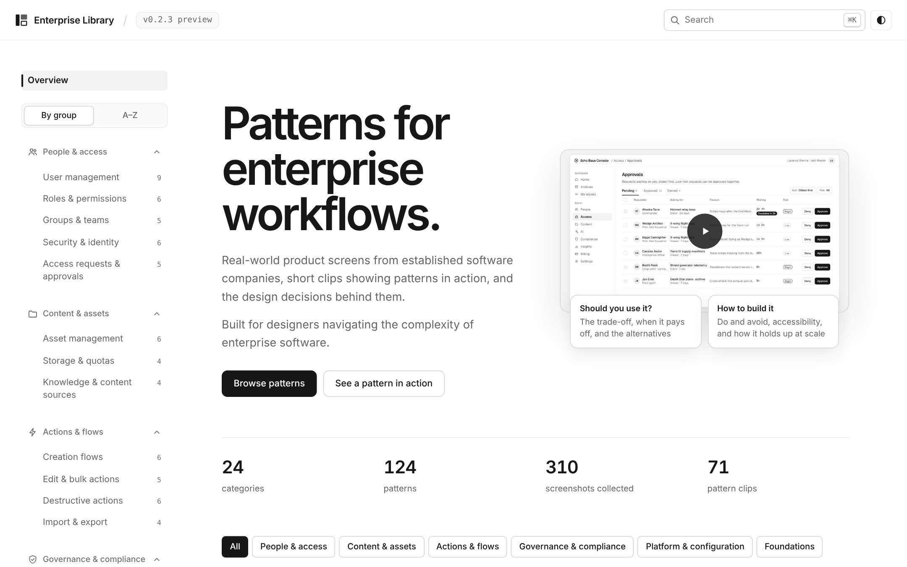
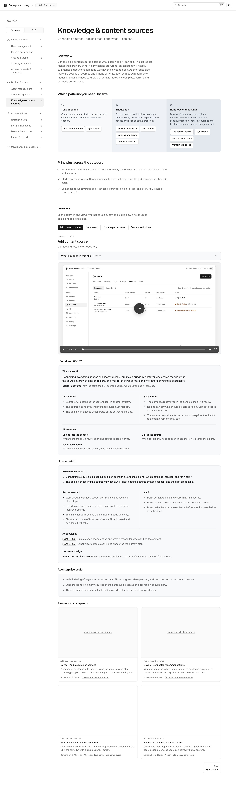
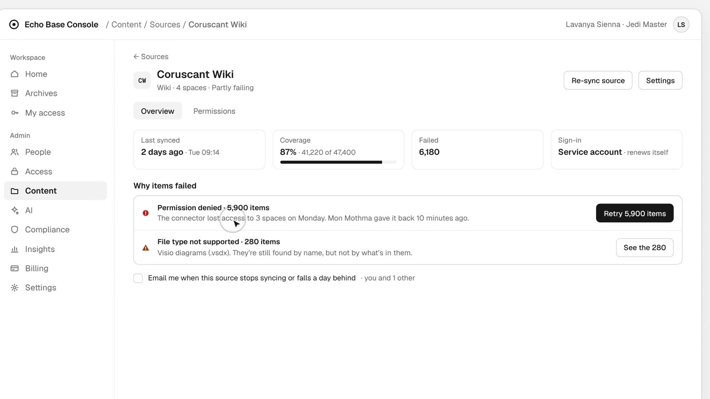

Designing for the enterprise?
Permissions.
Scale.
Compliance.
AI.
Enterprise Library
A pattern library for enterprise software.
enterprise-library

Know what you need
Which patterns matter at your size.
enterprise-library / knowledge-and-content-sources

See it work
Every pattern, shown in a short clip.
enterprise-library / sync-status

Decide, then build
The trade-offs, and how to build it right.
enterprise-library / sync-status
Enterprise Library
Built for designers navigating the complexity of enterprise software.
124
patterns
71
pattern clips
310
real product screens
Jothish John · © 2026